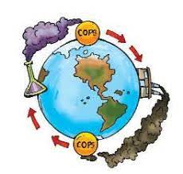
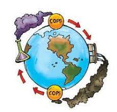

Mas Información: |
||
| LOS 12 COPS MÁS SUCIOS | ||
|  | COPS |
Daños que ocasionan los cops: |
Toxicidad con efectos inmediatos o crónicos sobre la salud:Los COP son sustancias químicas tóxicas de efectos inmediatos y/o crónicos sobre la salud, entre los que se incluyen el cáncer, los problemas reproductivos (muerte fetal, abortos espontáneos y alteración de la fertilidad), la alteración del sistema inmunológico (descenso de las defensas del cuerpo y facilidad de contraer enfermedades), disrupciones hormonales, alteraciones del comportamiento y disminución de los procesos cognitivos. Problemas hormonales y de desarrollo embrionario:Los COP que incluye el Convenio de Estocolmo son disruptores endocrinos, es decir, causan desequilibrios hormonales porque pueden imitar, sustituir o inhibir la acción de las hormonas, lo que provoca reacciones bioquímicas descontroladas, especialmente en el desarrollo embrionario. La carencia o el exceso de una hormona puede producir importantes trastornos en el desarrollo reproductivo, cambios en la conducta sexual, defectos de nacimiento y depresión del sistema inmunológico. También puede acaecer una disminución de esperma, pérdida de fertilidad, aumento de cáncer de pecho, de próstata y de testículos, así como un aumento de la hiperactividad de los niños y problemas de aprendizaje. "Indetectables" por los sentidos del cuerpo humano:Los COP entran en el cuerpo humano principalmente a través del consumo de alimentos. Estos compuestos se pueden acumular principalmente en los productos lácteos, el pescado y la carne, en cantidades muy pequeñas, que no son percibidas por los sentidos; no se pueden ni ver, olfatear o sentir en el gusto. Se acumulan en los tejidos grasos de los organismos. Se biomagnifican, es decir, aumentan su concentración en cientos o hasta millones de veces a medida que van subiendo en las cadenas alimenticias. Los COPs tienen generalmente alta solubilidad en lípidos (se disuelven fácilmente en grasas y aceites) y baja solubilidad en agua (no se disuelven fácilmente en agua). Bioacumulación y bioamplificación en la cadena alimentaria:Cuando son liberados al medio ambiente, los COP se pueden disolver en los tejidos grasos e ir concentrándose a través de un proceso que se denomina bioacumulación. Dicha concentración se bioamplifica, es decir, se incrementa en centenares o incluso en millones de veces, en la medida en que los organismos que contienen COP son consumidos por sus depredadores. Este hecho conlleva que dichos contaminantes se encuentren en diferentes estadios de las cadenas alimentarias, y que los organismos que se sitúan encima de la cadena trófica sean los que presentan una mayor concentración de COP. |
Mas Información: |
||
| LOS 12 COPS MÁS SUCIOS | ||
|  | COPS |